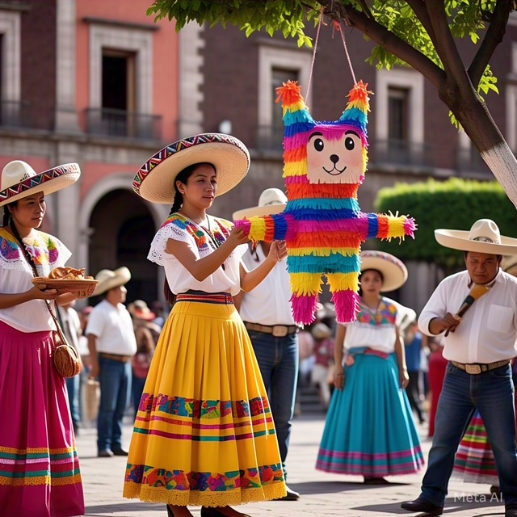
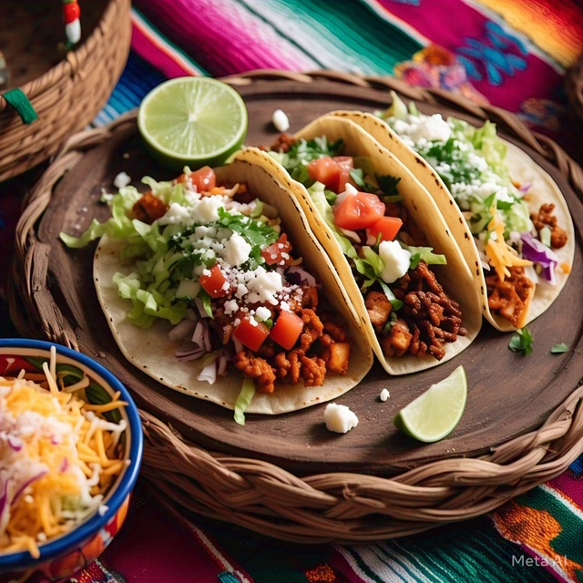
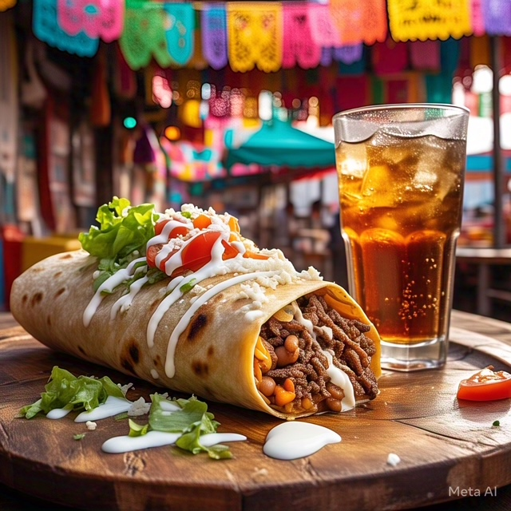
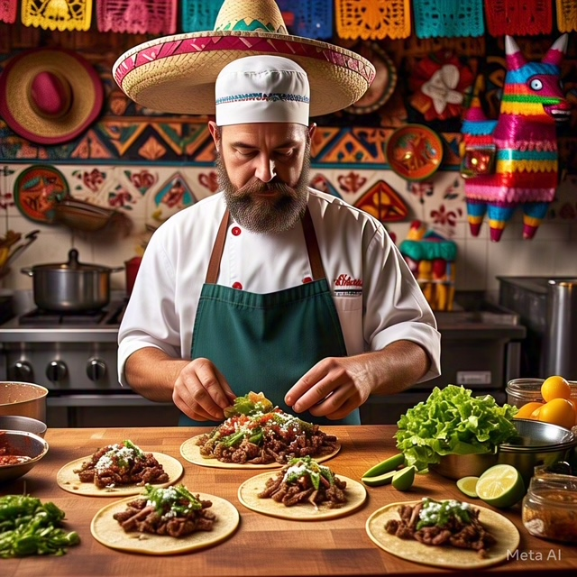

La cultura mexicana es mestiza, con influencias de la religión católica, el Imperio azteca, y otras culturas precolombinas. Es rica y diversa, con tradiciones, costumbres, gastronomía, y manifestaciones artísticas.


La comida mexicana es una de las más creativas del mundo, con una gran variedad de sabores y condimentos. Entre sus platillos más populares se encuentran los tacos, tamales, pozole, enchiladas, chiles rellenos, quesadillas y guacamole